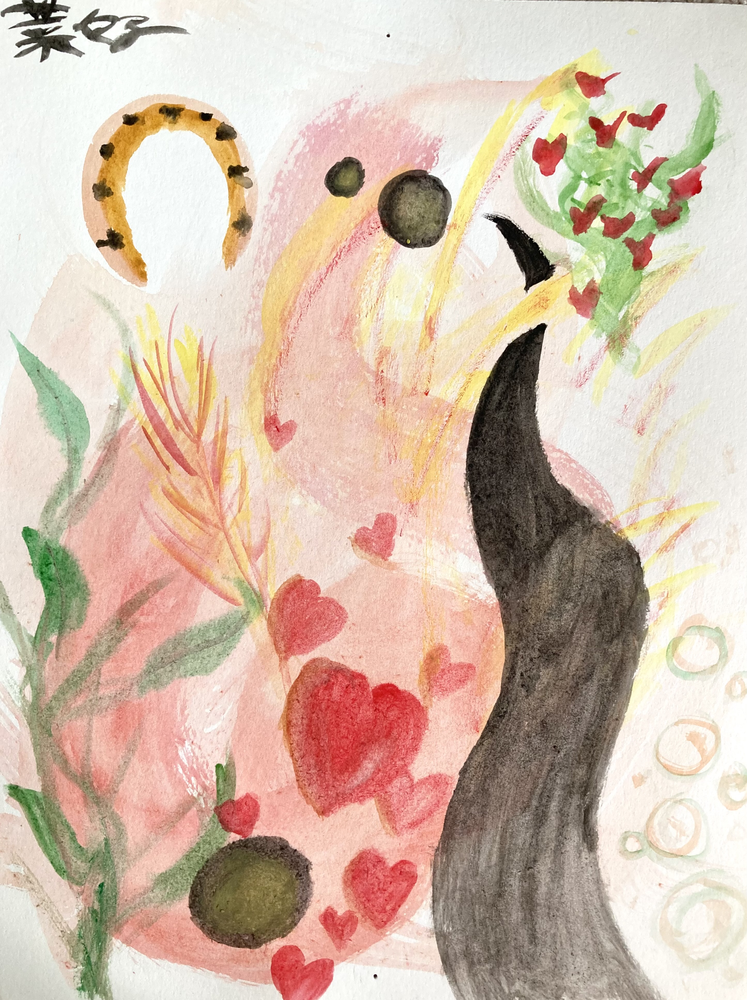

|  |
Date: Unknown
Medium: Watercolor Paint
Abstract drawing of what I believe was my mood that day. The horseshoe and plant were inspired by objects around my room. The black bubbles were a test of a techinque I had learned to make spherical shapes, while the road was a test of how cleanly I could draw edges with just watercolor.
|